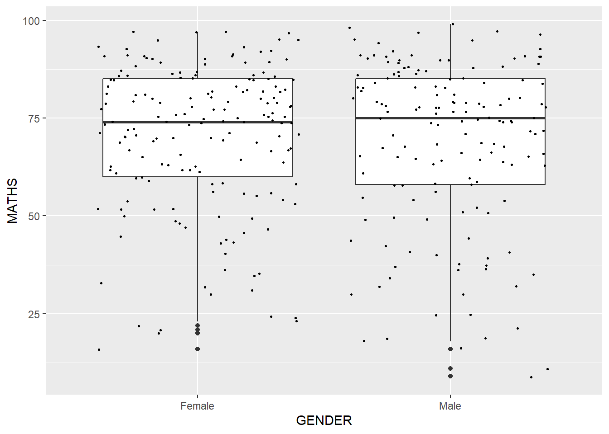
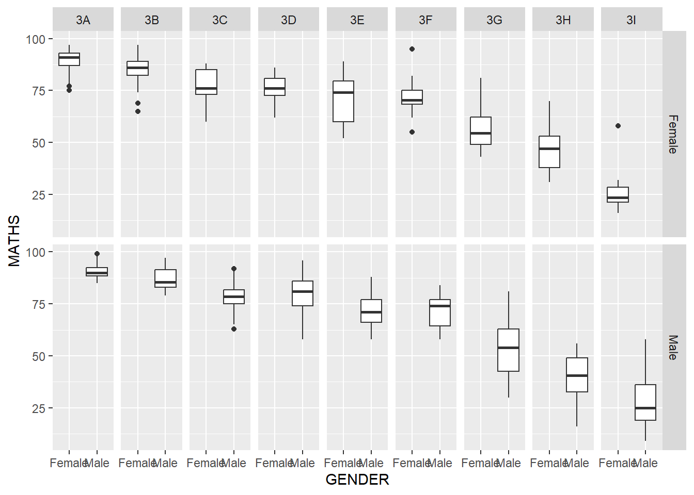

pacman::p_load(readr, ggplot2, tidyverse)Hands-on Exercise 1
Getting Started!
1 Introduction
2 Packages used
3 Importing data
Let us use read_csv() of readr package to import our data used in this hands-on Exercise as shown in the code chunk below.
exam_data<-read_csv("data/Exam_data.csv")As the information shows above, there are 4 categorical attributes which are ID, CLASS, GENDER, RACE, and the rest are continuous attributes which are ENGLISH, MATHS, SCIENCE. The data has a total of 322 rows.
Let’s take a quick look at statistics summary of the data imported using summary() function.
summary(exam_data) ID CLASS GENDER RACE
Length:322 Length:322 Length:322 Length:322
Class :character Class :character Class :character Class :character
Mode :character Mode :character Mode :character Mode :character
ENGLISH MATHS SCIENCE
Min. :21.00 Min. : 9.00 Min. :15.00
1st Qu.:59.00 1st Qu.:58.00 1st Qu.:49.25
Median :70.00 Median :74.00 Median :65.00
Mean :67.18 Mean :69.33 Mean :61.16
3rd Qu.:78.00 3rd Qu.:85.00 3rd Qu.:74.75
Max. :96.00 Max. :99.00 Max. :96.00 4 Descriptive plotting
4.1 Histogram plotting
Now let’s use functions in ggplot2 package to describe attributes of the data by plotting different graphs. First let’s take a look at the MATHS grade by plotting a histgram for each class.
ggplot(data = exam_data,
aes(x = MATHS)) +
geom_histogram(bins = 20,
boundary = 100,
color = "black",
fill = "light blue") +
scale_y_continuous(NULL,
breaks = NULL) +
ggtitle("Distribution of Maths Scores")
Now we can also display gender attributes by assigning blue to Male and red to Female in the histogram.
ggplot(data = exam_data,
aes(x = MATHS,
fill = GENDER)) +
geom_histogram(bins = 20,
boundary = 100,
color = "black") +
scale_y_continuous(NULL,
breaks = NULL) +
ggtitle("Distribution of Maths Scores")
4.2 Density plotting
Now let us see the distribution of MATHS scores in a kernel density estimate plot using code chunk below.
ggplot(data = exam_data,
aes(x = MATHS))+
geom_density() +
ggtitle("Density of Maths Scores")
From the plot above, it shows that the density of Maths scores fits a left skewed bell-shaped distribution. And the mean of the distribution lays around 80.
Then we can plot two kernel density lines for different genders by using chunk below.
ggplot(data = exam_data,
aes(x = MATHS,
color = GENDER)) +
geom_density()
We can see that two kernel density lines for different genders are very similar.
4.3 Boxplot
4.3.1 Boxplot
We can also plot boxplots of Maths scores for genders to visualise statistics attributes like Median, two hinges, two whiskers, outliers and mean by using codes below.
ggplot(data = exam_data,
aes(y = MATHS,
x = GENDER)) +
geom_boxplot() +
stat_summary(geom = "point",
fun.y = "mean",
color = "red",
size = 4)
Noted that the Maths scores of Male are bit higher than that of Female. But the range of Maths scores of Male is larger than that of Female.
4.3.2 Notchplot
Then let us plot Notched plot by using codes below to make boxplot more visulised.
ggplot(data = exam_data,
aes(y = MATHS,
x = GENDER)) +
geom_boxplot(notch = TRUE)
4.3.3 Integrated boxplot and point plot
We can also integrate point plot and boxplot together.
ggplot(data = exam_data,
aes(y = MATHS,
x = GENDER)) +
geom_boxplot() +
geom_point(position = "jitter",
size = 0.5)
5 Violin plotting
5.1 Violin plotting
Violin plots are a way of comparing multiple data distributions. The code below plot the distribution of Maths score by gender in violin plot.
ggplot(data = exam_data,
aes(y = MATHS,
x = GENDER)) +
geom_violin()
Noted that Male has lower Maths scores than Female and higher scores than Female. And both gender’s Maths scores congregate around 80.
5.2 Integrated violin and boxplot
The code chunk below combined a violin plot and a boxplot to show the distribution of Maths scores by gender.
ggplot(data=exam_data,
aes(y = MATHS,
x= GENDER)) +
geom_violin(fill="light blue") +
geom_boxplot(alpha=0.5) 
6 Scattered plotting
Now let’s plot point graph to show correlation between MATHS scores and ENGLISH scores by using code chunk below.
ggplot(data=exam_data,
aes(x= MATHS,
y=ENGLISH)) +
geom_point() 
The interpretability of this graph can be improved by adding a best fit curve.
ggplot(data=exam_data,
aes(x= MATHS, y=ENGLISH)) +
geom_point() +
geom_smooth(size=0.5)
Noted an obvious poisitive linear correlation between Maths score and English score.
The default smoothing method can be overridden as shown below.
ggplot(data=exam_data,
aes(x= MATHS,
y=ENGLISH)) +
geom_point() +
geom_smooth(method=lm,
size=0.5)7 Faceting
Faceting generates small multiples, each displaying a different subset of the data. And facets are an alternative to aesthetics for displaying additional discrete variables.
7.1 Faceting of distributions
The code chunk below plots a trellis plot for distribution of Maths score using facet-wrap().
ggplot(data = exam_data,
aes(x = MATHS)) +
geom_histogram(bin = 20) +
facet_wrap(~ CLASS)Now we can see distributions of Maths scores by class 3A, 3B, 3C, 3D, 3E, 3F, 3G, 3H, 3I.
7.2 Faceting of boxplots
We can slice the Maths scores in each class by gender for boxplots as shown below.
ggplot(data = exam_data,
aes(y = MATHS,
x = CLASS)) +
geom_boxplot() +
facet_wrap(~ GENDER)
Also we can show the plot in vertical direction.
ggplot(data = exam_data,
aes(y = MATHS,
x = CLASS)) +
geom_boxplot() +
facet_wrap(~ GENDER,
dir = "v")
ggplot(data = exam_data,
aes(y = MATHS,
x = GENDER)) +
geom_boxplot() +
facet_wrap(~GENDER+CLASS,
nrow = 2,
drop = FALSE)